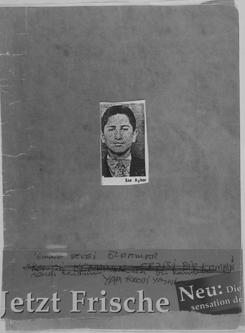
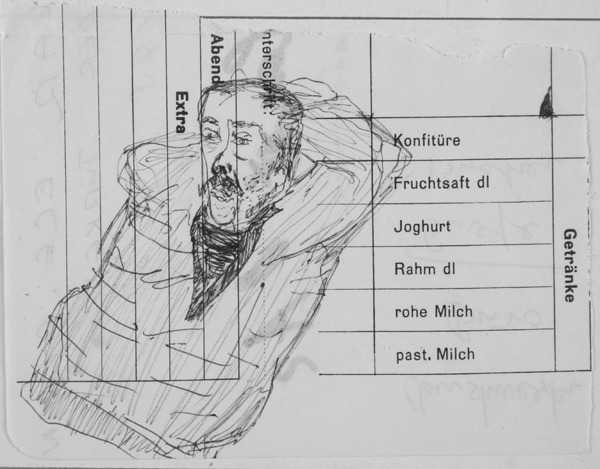
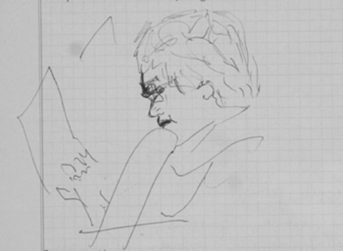

Sevgi Özdamar’ın bu kitap için tasarladığı kapak.
İstanbul, 3 Ekim 1974
Ece’ye Cerrahpaşa hastanesine gittim.
Odada kitap okuyordu. Yeni Osmanlılar Tarihi’nin2 ikinci cildini. Kör bir çocuk, bitkisel hayat yaşayan bir hasta, uyurken bir gözü fırlamış, açık bakıyordu, görmüyordu, Ece, “Ben teessür duymuyorum bene dönük bir yapım olmadığından, esas teessür dış âlemde, bunlarda” dedi.
Ece yorulunca yanaklarını öpüp ayrıldım. Osmanbey Ajanstür’e geldim. Onat’ın beni aradığını, hemen telefon etmem gerektiği telefon haberini aldım.
Telefon: İsviçre için muameleleri cuma günü Ferit Erkman’a giderek yaptırmamı söyledi.
O gece Üstün, Yorgo, Koray Çağdaş Sinema’nın yazıları, politikası ve film yapımı sorununu tartıştık. Üstün benimle Çengel’e geldi. Oturmadı, çantası omzunda dolandı, bir süt içti, gitti. Bu günlerde regliydim. Hassaslaşıyor sinirlerim, yanılgı mı, yoksa gerçek duygularımın daha kalın çizgilerle belirmesi mi, bunu ayırdedemiyorum. Bir doktora mı sormalı, kendi adıma değil tabii, sırf merak... Neyse, belki yatmam gerekiyor. Aylardır sevişmiyorum, aslan gibiyim. Bünye ne düşünüyor kendi adına, göreceğiz.
Gece kâbusluydu. Camları kırıyordum, kadınları dövüyor, kezzap atıyordum suratlarına, dinamit koyuyordum eşyalarına, apartmana.
Sabah uykuya verip kendimi, İsviçre’ye gitmeye ürküyordum. Bu bence gizli bir sevincin beni ezişiydi. Uçaktan çok korkuyordum. Ama Ece ile ölmek –işte bunu göze aldığımda, kalktım.
Muhtar yoktu. 2. muhtar ikametgâh verdi.
Şipşakçıda 12 fotoğraf, bayağı güzel çıktı.
Ferit’e gittim. Çağatay geldi. Ferit, Ahmet, Dilek, Sait Maden, Emniyet Müdürlüğü koridorlarına yayıldık.
Rapor geldi hastaneden. 50 dakika içinde pasaport elimize verildi. Şişman Nihat (komiser) özel olarak ilgilendi. Genç polis, “Torpiliniz kuvvetli o yüzden kalıyoruz” diye açıkladı.[3] Pasaportları aldık, Ferit’e çıktım, parayı aldım.
Mehmet[4] “İsviçre’nin nesi meşhur?” sorusuna “Kadayıfı!” dedi. Çok sevimli elbette. Ona ne yapıp edip kadayıf götürmeli.
Kalender’le[5] Çengel’e geldim. Ağaçlar açılmış. Ev iskeleden görülüyor artık. Evde bütün etleri pişirdik, sütleri içtik, babaannem bohçasını hazırladı, bavul, çöpler, ev kontrolü, indik.
Kocakarıyı uçurarak yoldan aşağıya indik. Otobüs –Çubuklu’da iniş, Can, Güler çocuklara rastladık.[6] Babaanne, Güler’e “Bu seninki mi?” dedi. Gülüşüldü. Ece’yi çok iyi gördüm. Teyze[7] de has kadın, kederini belli etmiyor. Mehmet de aynen evin kedisi. Ece’ye ayakkabı almışlar. 10.30’da Körfez’e yürüdük. Semra’yı (Özdamar) Erdal’a (Alova) emanet ettim. Güler, Can, ben oturduk. Ece için istenecek paralarla estetik ameliyatları olacağımı anlattım.
Can’ın çıkacak şiirlerini okudum. Işıkta uyumak istiyordum. Sabah Güler kahveyle girdi. Körfez çok güzeldi. Sonbahar ışığı, gümüş gibi ısılı, nemli, buğulu tepenin yeşili enfesti valla. Neşe girdi, acele pantolonumu giydim. “Ben geçirmeye gelmiyorum” dedim.
Sebil’de çay içildi. Hayalet Oğuz, Neşe, Celil, Güler, Can, Ayşe Teyze, Onat (Kutlar), ben, Ece.
Bankada döviz yoktu. Çek yazdılar. Yeşilköy’de ayrıldık. Eller durmadan sallanıyordu. Yaşar Kemal sigara aldı. EFES. Gaspard Armand’ın adını verdi. Uçağa bindik.
Uçakta en arkada ihtiyar kadın, 350 kişinin havada parçalandığı uçakta oğlu pilotmuş. Sedasız sessiz ağlıyordu.
Zürih’e giden işçi aileleri çocukları, sepetleri ile yolculuk. Ece sordu. “Nasılsın uçakta?” “Pek hoşlanmam da...” diye cevapladım. Hostesler sevimliydi, gazetenin ilanlarına dek anlamadan okudum. Vural Akbabagil intihar etmiş. Ölüm ilanından öğrendim. Berktan’ın kısa metraj filminde intihar eden bir alkoliği canlandırmıştı. RASTLANTI.
Zürih’e inerken pencerelerden baktım. Yeşil, düzgün sınırlar, damlar, kiliseler, yollar, yüzlerce araba, Zürih gölü. Lenin’in Kurupskaya ile dolaştığı yollar. Nerde oturmuşlardı acaba?
Avrupa’dan hiç ayrılmamış gibi alışkınım. Otobüsle Bahnhof’a, taksiyle hastaneye geldik.
Araştırdım. Gazi (Yaşargil) yoktu. Dr. Tok[8] da... İtalyan Costabile ilgilendi, Gazi’nin asistanı. Uzun uzun muayene. Pazar 11’de randevu. 17.00’de Dr. Tok geldi. Otel Sonnehus’a yerleştik.
Otelde Osman diye bir çocuk. Gözleri çok az görüyor. Biz üçlü Bahnhof’a indik. Tophane’ye daldık. Sosisler, orospular, İtalya mafyasının 41. dereceden görevlileri. Lokantaya daldık, aaa, burası Yolgeçen Hanı! Kocakarılar içiyor, ağzı gözüne çıkan moruklar yiyor içiyor. Ayaksız, kolsuz erkek, karı moruklar. Talebeler uğruyor. Bir sarhoş İtalyan yanıma oturdu. Osman az gören gözleriyle onu uzaklaştırdı. Karşımıza bir çoban indi. Pantolonu çengelli iğneli. Nerdeyse kayışı halattan. Masanın üzerindeki tuz ve et suyunu rehin aldı. Bira istedi. Garson karı bira vermedi. Çoban kolunu tuttu. Karı “Elleme beni!” dedi gülerek. Çoban “Ben senin o üzerindeki gömleği yapan fabrikanın sahibinin oğluyum” dedi, dertlendi çoban. Sarhoştu. Meydanda bir nutuk atıp gitti. Ece yoruldu, ben şarap içtim, yemeklerin tadı, Avrupa’nın sert soğuğu 18-20-21 yaşlarımı taşıdı bana, hüzünlü bir PROFESYONEL...
Tramvayla otele geldik.
Ece iki kişilik yatakta yattı, ben divanda... Gece soğuktu. Pijama almayı atlamışım.
Pazartesi sabah altıda uyandı Ece. Kahvaltıya indi. Kartları yazarken yorulmuş. O isimler bin detayı çağrıştırıyor elbet.
Gazi’ye gittik. Ben çok sevdim. 1945’ten bu yana Türkiye’yle ilişkisi yok ama bazı görüntüleri silmemiş. Nurullah Ataç, Can, H. Âli Yücel, Ankara, Cebeci, Atatürk Lisesi, Cumhuriyet, Yeni Ufuklar, Dünya.
ECE’nin iyi huylu bir tümörle başı belada.
Perşembeye ameliyat dedi Gazi, ayrıldık. Otele geldik. İstanbul hatları bozuk. Can’a, Onat’a telgraf çektik. Paris, Abidin Dino’yu aradık. Bizim derdimizden çok kendi aranmasını önemsedi –teşekkür etti telefonumuza. Gönenç’i (Kurtiz) aradık. Abim Ali’den (Özdamar) haber verdi. Bern’de montajdaymış, rahatladım. Abime telgrafla tel numaramı verdim. Gönenç Celil’le görüşmüş. Rahatladık. Çay ve pasta aldım. Neşeliyiz. Ece “Öleceğiz ama fırlamalığa devam edeceğiz” dedi. Çevresiyle, eşyalarla, renklerle, insan tipleriyle çok yakından ilgili.

Ece’nin düşünen adam resmi, otelin kâğıdına çizilmiş.
Aynada ikimizin yüzü yan yanaydı. Pijamalarını yıkıyordum. “Esrarkeş gibisin!” dedim. Sol kaşı gene yukardaydı.
Akşam, loşlaştı oda. Ülkü Başsoy’u, Dilek’i, Günsel Koptagel’i, tabanca ile kovaladığı adamı, Tanju’yu (Kurtarel) nasıl tanıdığını, deli raporu verdirtmek isteyen düşmanını uzun uzun anlattı. Ben Ece’nin alış, sunuş biçimini edinmeye başladım. O ritmi sevdim, hem dile, hem insana değer veren bir kavratma biçimi var onda.
Ali telefon etti 21.00’de. Sevinçliydi. Montajdaydı. Salı günü akşam gelebilecek.
Yemeğe indik. Çorba ve kafeglas yedi Ece. Osman’ın masaya gitti. Otelin mahzeninde çalışan çocuk yukarı geldi. Ece aniden kalktı. Bir Laz gangster varmış tanıdığı. Pasaportları alır kaçarmış, aniden terledi, onu hatırladı, masadan kalktı. Kulağı işitmeyince kontak zor oldu. Üç dakika sonra geldi.
Neyse. Çocuk turist olarak çalışıyor, kaçak.
“Konya’da Almanya’ya çıkmayana kız vermiyorlarmış artık.” Enfes tabii.
Odaya çıktık. Ece’nin gömleğini yıkadım.
Bana Mehmet’ten söz etti. Nasıl şaşkın olup, sonra olgunlaştığını, dış davranışlar edindiğini, iyi bir çocuk olduğunu... Onu adam etti Ece, yaşasın.
Uyudu.
Gece.
Alo
Alo sesiyle uyandım, kalktım, telefonda ses yok. Ece hastaneye ameliyata yatmadan dostlarından birinin sesini duymak istedi, bunu kurdu ve uykudan uyanıp uyanmayıp telefona sarıldı.
Yok dedim, ses.
Uyudu.
Zürih, 7 Ekim 974
07.15’te uyandı, 07.30’da da ben. Kahvaltıya indik.
Yedik içtik. Çarşıya çıktım. Tramvay.
Sosiete Bank de Suisse. 1400 Frank.
Üzüm, muz, tıraş makinesi, defter, kalem.
Otele dönüş.
Gönenç geldi.
Ece tıraş oldu. Ece’ye baktım, salonda. Son derece çökük ve acılıydı. Çok düşündüğü besbelli. Kendi kendine konuştu.
“Anjin değil, kafayı veriyorsun.”
Yumuşak, uykuda gibi...
Hastane.
Yugoslav kız, 07.00’den 19.00’a kadar çalışan Dr. Tok: “Nerelisin hemşerim, ye ye, a yapma, nerde işçisin?”
Türkler külfet olur, havadan sorularla onlardan paça sıyırmayı bilir, müthiş zeki sanır kendini, tombul bir genç adam. Tabii onun dünyası nerde, bırakalım yapsın. Gözleriz fena mı?
Ece ropdöşambrdan anladı kaçıncı sınıf kişi olduğunu, ineklerin gözüne nasıl gözüktüğünü...
Tahliller için indik.
Ece yoruldu. Oda. Tekerlekli iskemleyle yine tahlile indik.
Radiyografi alan kadın bana “Güzel kadınsınız,” dedi. Ece de onların ikisinin çok güzel olduğunu söyledi. Kıkırdadılar, hoşlandılar.
Ece, gözleri kapalıydı. Uyumasın diye, 300 rakamından geriye, yüksek sesle saydırdılar. Kadınlara öyle şefkatle bakıyordu ki, korku, heyecan, bin yılın insanı seven gözü, birikimiyle, her gülene daha içten gülerek karşılık veriyordu. Güzel sarışın genç bir doktor. O arada doktor Tok indi. Ece’yi yukarı çıkarışımın üç saat işi attığını söyledi. Operasyon salı diyor. Ece duymadı.
Ece odada.
KAN alındı.
Yugoslav kız gitti.
Ece’ye bir kadın doktor uğradı.
Ece ona, aşağıda BRÖLLER adlı kapının, meşhur psikolog Bröller’e mi ait olduğunu sordu. Kadın, “O yetmiş yaşında, ders vermiyor. Sizin Bröllerlik işiniz yok,” dedi. KAZ. Ece’yi anlamazsan DELİ dersin tabii. Sensin deli.
Ece yemek yerken kimseye sinirlenmemesini akıl verdi. Çizmeler sıkıyordu.
Ece’nin yanaklarını öptüm. Otele koştum. Yorgunluk.
Can, İstanbul – telefon.
Onat.
Para, iyi dilekler.
Perşembeye bekledikleri telefonum.
Ali (abim) aradı. Yarın 20.42 treniyle geliyor. Gönenç çarşambaya gelecek.
Bir konyak içtim. Kartları yazdım. Sosis yedim, bira, kapiçino.
Oda.
Banyo. Yeni Osmanlılar Tarihi.
EBUZZİYA.
Çok yakışıklıymış gençliğinde. Gözler çok güzel bir kere.
İspanyol garson benimle laubalileşmek istiyor, görmezlikten geliyorum.
Celal, Neuchatel. Pijaması olmayışı, Ece’ye ropdöşambr gönderecek, Ali’yle.
Meyvalar plastik sanki. Mumdan. Yağmur yağıyor. Pencerelerde sonbahar ıslaklığı... Yukarıda düzüşen iki delikanlı. Uyumalı, saat 01.00. Sabah 08.00’de Ece’ye gidebilsem. Ya ameliyata alınmışsa, ya onu bugün son olarak yanaklarından öpmüşsem. Çok dikkatli... Her şekilde dikkatli olmalı.
ALINGAN ama çok iyi görüyor, zor onun işi, duyarlı duyarlı, namuslu, işte gerçek ŞAİR, tanıdım onu. Çok çalıştı. ŞİŞİRİLMEDİ, bol bol var olan imajların peşine düşüp sahte şair, sahte okuyucu ilişkisini kurmadı.
ÖNEMLİ.
Yarın ne olacak!
Zürih, (1.10) 8 Ekim 1974
(Ece sabahın erken saatlerinde NARKOZ denemesi için uyutuldu. Saat 13.20)
Gözünü açtı “Bana ne yaptılar bunlar?” dedi. Kendinde değil, mekanik bir konuşma. “Zarfları çekmeceye koy!” dedi ama.
15.00’te gideceğim.
Ece uyurken Zürih’e, merkeze indim. Zarf, gazete, kalem, ekmek, peynir, yoğurt.
Kitapçılara uzun uzun baktım. Bir plak evinde “Lotte Lenya”yı dinledim: “Von dem Erturunkenen Mädchen. Song einer Deutscher Mutter.” Bir yüzü dinleyip çıktım. Vitrinlere baktım. Sokaklar oldukça tenha. Bir iki İtalyan işçi kadın. Az biraz talebe.
Tramvayla hastahaneye geldim. Ece’ye 15.00’te gideceğim. UYUSUN tabii.
Soğuk, vücut adapte olamadı buradaki ısıya. Araba, motosiklet sesleri, ara sıra tramvay, uzak bir inilti, –çın... durak sesi.
Boğazım yanıyor dün üşüttüm.
HASTANE.
Ece uyandı. 2 tümör varmış, sağda, solda. 2 tümör aynı anda ameliyat edilebilir mi?
Prof. YAŞARGİL gelecek. Koridorda rastlaştık. Ona Can’ın selamını söylemeli. Parayı –1000 Frank– sormalı, sormamalı. Gelmişse o sözünü eder mutlaka.
Dr. Yaşargil geldi.
“Ece wird morgen operiert.”[9]
Onu, eyvallah demeden, uykuda bıraktım.
İYİ ŞANSLAR ECE.
Ali’nin treni geç geldi. 21.28. Çarşamba.
Mövenpick. Otelde 01.00’e dek konuştuk. Sabah Gönenç telefon etti, yarın geliyor.
Sabah kahvaltı. Kahve. Pastahane. Yağmur. Şapka aradık. Ali benim balıkçı kepe göz koydu. TRAMVAY.
Ece 08.30’dan 15.00’e dek ameliyathanede kaldı. 15.15. YAŞIYOR. Odayı değiştirmişler. Uyuyor. Plastik bir insan, manken gibi. Bıyıkları çöpçü bıyığı gene...

Kardeşim Ali (Özdamar) otel odasında.
Telefon için bekleyeceğim. Yarın sabah en doğrusu.
(RESİM 10/ DEFTERDE VAR)
Çarşamba, gece 11.20.
Ece yatakta, uyanmış, konuşamıyor.
Zihin fırıl fırıl işliyor, sanıyorum kafasının kazınan yerini kaşıdı. Terlerini sildi. Ali’nin elini tuttu. İşemek istemediğini işaretle anlattı. Uykuya girdi-yeniden.
Perşembe.
Gönenç telefon ederse hastahaneye yollanmalı. Ece de bekler bizi.
Ali ile sabah 11.00’de Ece’ye gittik. Çok iyi. Gece gelişimizi hatırladı.
Robdöşambr götürdük. “Gazete var mı, gazete?” dedi. Elinde bir ayna tutuyordu, ağzı hafif çarpılmıştı. Gözü (sağ) kapanmıyordu. Gözü eliyle kapıyor. Göze yapıştırılan bir koruyucuyu kaldırıp atmış. Gönenç ve Tuncel Kurtiz’le ona geleceğimizi söyledik.
Ali ile caddelerde dolaştık. Cadde ortasında bir kanepeye oturduk. Hava çok güzel. 15.09 treninden Tuncel’i ve Gönenç’i aldık. Kahvede oturuş.
Ece’ye geliş.
Yolda, Ankara’da arkadan vurulan Koray’ın abisine rastladık. Konuşamıyordu. “Hadi, bize gidelim!” dedi.
Ece’ye geldik.
Ece, Tuncel’i Park Otel’de kimlerle gördüğünü bir bir hatırlamış.
Doktor Gazi geldi. Tüm doktorlar yok oldu. Biz dördümüz sakindik. Benim elimi bir iyice sıktı. Adam çok hoş. Elleri çok güzel. “Sizler sanatçısınız, belli...” dedi. “Merak etmeyin, hastanıza bakıyoruz efendim!” dedi.
Ben fena oldum. Kusmak istiyordum. Ece’nin dişlerinden dördü eksik. Gazi’ye sormalı, yaptıralım mı, diye.
Ece bana cumartesiye dek izin verdi. Ona, cuma günü geleceğim, dedim.
Dördümüz üç güzel lokanta değiştirip şarap, kırmızı-beyaz, sümüklüböcek yedik.
Tuncel’le benim sesimiz bol bol çıktı. Çünkü Türkiye’de aynı çevrede, boktan, sonuçta işe yaramaz, lafa yarar çevrede yeşermiştik.
–ISRAR– Sevgili arkadaşlardan, Saint Gallen’e gittik.
Çok iyi oldu.
İtalyan usulü mutfak. Tereyağ, peynir, limonlu enginar, rakı, elma suyu.
Ulvi Uraz... HİKÂYE, geçmiş ola.
Geceye meydan okuyup uyudum. Sabah 04.30.
Sabah erken, 08.00.
Uyanıp şehre inmek, poğaça almak istedim, burası Kuzguncuk değil. Uykuya devam.
Cuma, 11 Ekim
10.30’da kalkış. Kahvaltı.
Migros.
İnce merdivenler-ağaçlar, Tapi-panosu Şehir Tiyatrosu’nda, yarım milyona. İspanya İç Savaşı’ndan sonra kızıl bayraklar, siyah yaralarla dolu kızıl bayraklar...
Altında saat, komik olur (enstitü sergisi) görüntüleri.
Kahve. Sıcak peynirli börek. Trenle şehre dönüş.
Ali yoruldu.
Ece.
Gazi, Ece’yi şikâyet etti. Kolundaki, gözündeki engelleri kaldırıp attı diye. Konsolosluğa bir mektup yazmış. Pazartesi Türk konsolosluğuna gideceğim. Tasdik edilen mektubu Fikret Otyam’a yollayacağım.
Gazi elimi uzun uzun sıktı. Sıcaktı elim, onunki daha soğuk, istekli, hoşlanmış.
Ali, Ece’nin yanındaydı.
Ece’nin gözü bantlı, ağız çarpık. Gazi, yüz reflekslerini kontrol eden sinirin transparal hale geldiğini, hasta 60 yaşında olsaydı ameliyatı yapmayacağını söyledi. “Ama genç adam, devam ettim,” dedi.
Ali ile acele otele geliş. Ali anneme yazdı. Yoruldu güzel Ali’m. “Bahnhof’a hangi tramvayla ineceğim?” dedi. 10 numarayı iyi tanımıştı. Dün gece ekstra bir geceydi. İçki, su gibi giden. Tuncel’le benim için daha kolay, çok iyi tanıdığımız tipleri getirdik (konuşmalarımızda) Zürih’e, ameliyat masasına yatırdık.